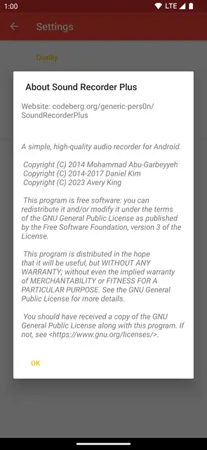

Sound Recorder Plus
صوت وفيديو وموسيقى
Sound Recorder Plus is a free and open source sound recorder for Android based on Sound Recorder. It has the following features: * Easy recording. Just hit the record button, hit stop when finished, and you're done! * Recording management. Manage your recordings straight in the app with no hassle. *
✓ ترخيص مفتوح (GPL-3.0-only) · آخر تحديث: 2024-10-13
1.1.1الإصدار
4.7 MBالحجم
GPL-3.0-onlyالرخصة
Open in Kanzتحميل APK (4.7 MB)
Download APK
SHA-256: c8f66ab2e3b26dc2b322cd104b943f151041fed49028a4f5f4f6d7a4c1f75137

امسح الكود لفتح صفحة التطبيق
Scan to open this app page
لو كنز مش متثبت عندك: نزّل متجر كنز.
Not installed? Get the Kanz store.